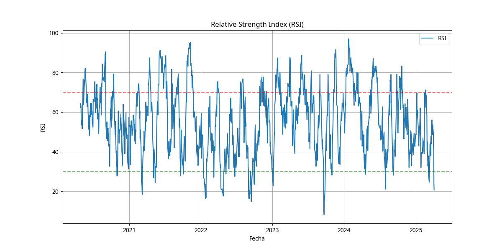
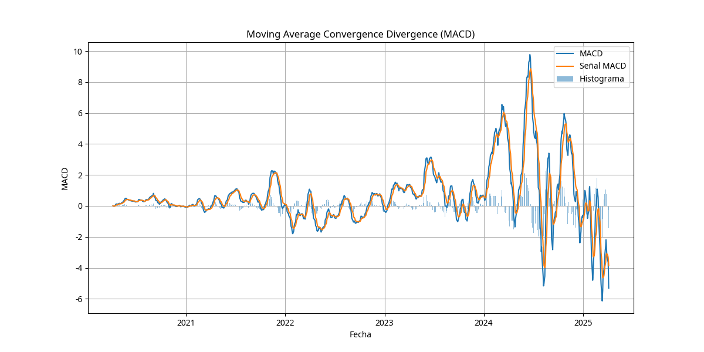
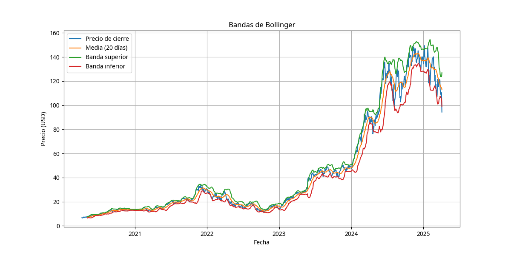
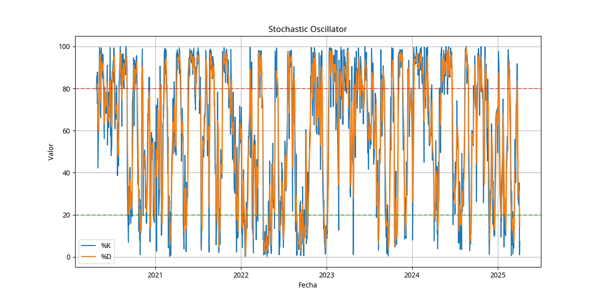
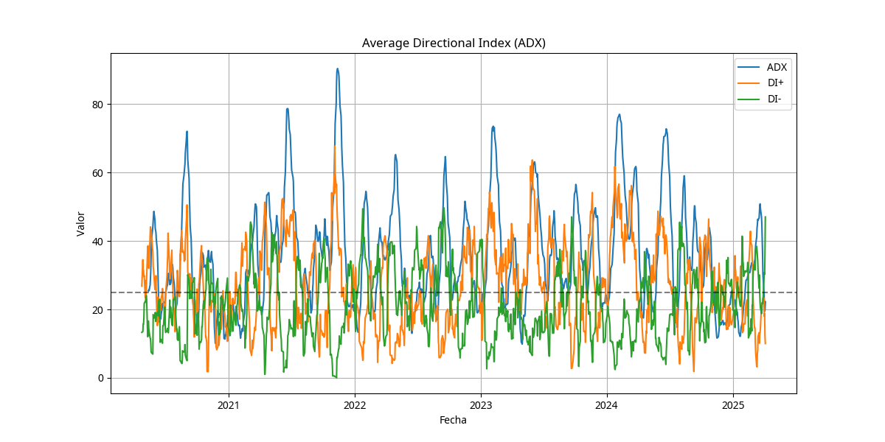

RSI (Relative Strength Index)
Valor actual: 62.5
El RSI se encuentra en zona neutral, ni sobrecomprado ni sobrevendido, indicando equilibrio entre compradores y vendedores.
MACD
MACD: 2.45 | Señal: 1.87
El MACD se encuentra por encima de su línea de señal, lo que indica momentum alcista en el corto plazo.
Bandas de Bollinger
Posición: Cerca de la banda superior
El precio se acerca a la banda superior, lo que podría indicar una condición de sobrecompra, pero en tendencias fuertes esto puede persistir.
Medias Móviles
MA50: Por debajo del precio | MA200: Por debajo del precio
El precio se mantiene por encima de las medias móviles de 50 y 200 días, confirmando una tendencia alcista de fondo.
RSI (Relative Strength Index)
El gráfico muestra el RSI de NVIDIA. Las líneas horizontales en 70 y 30 marcan las zonas de sobrecompra y sobreventa respectivamente. El RSI actual se encuentra en zona neutral, sin señales extremas.
MACD (Moving Average Convergence Divergence)
El gráfico muestra el MACD de NVIDIA. La línea azul representa el MACD, la línea naranja es la señal, y las barras representan el histograma. Actualmente el MACD está por encima de su línea de señal, lo que es una señal alcista.
Bandas de Bollinger
El gráfico muestra las Bandas de Bollinger de NVIDIA. El precio se encuentra cerca de la banda superior, lo que podría indicar una condición de sobrecompra, pero en tendencias fuertes esto puede persistir durante periodos prolongados.
Stochastic Oscillator
El gráfico muestra el Stochastic Oscillator de NVIDIA. Las líneas horizontales en 80 y 20 marcan las zonas de sobrecompra y sobreventa respectivamente. Actualmente el oscilador muestra señales mixtas.
ADX (Average Directional Index)
El gráfico muestra el ADX de NVIDIA junto con los indicadores direccionales DI+ y DI-. Un ADX por encima de 25 indica una tendencia fuerte, mientras que la relación entre DI+ y DI- indica la dirección de la tendencia.
Conclusión del Análisis Técnico
El análisis técnico de NVIDIA muestra una señal general alcista basada en los indicadores evaluados:
- La tendencia a largo plazo es claramente alcista, con el precio por encima de las medias móviles de 50 y 200 días.
- El MACD muestra momentum alcista en el corto plazo.
- El RSI se encuentra en zona neutral, sin señales de sobrecompra extrema que pudieran anticipar una corrección inmediata.
- Las Bandas de Bollinger muestran que el precio se acerca a la banda superior, lo que sugiere precaución pero no necesariamente un cambio de tendencia.
- El ADX indica una tendencia fuerte con predominio de la presión compradora (DI+ > DI-).
Desde una perspectiva técnica, NVIDIA mantiene una estructura alcista sólida, aunque los inversores deben estar atentos a posibles señales de agotamiento a corto plazo debido a la proximidad a zonas de resistencia y a la banda superior de Bollinger.